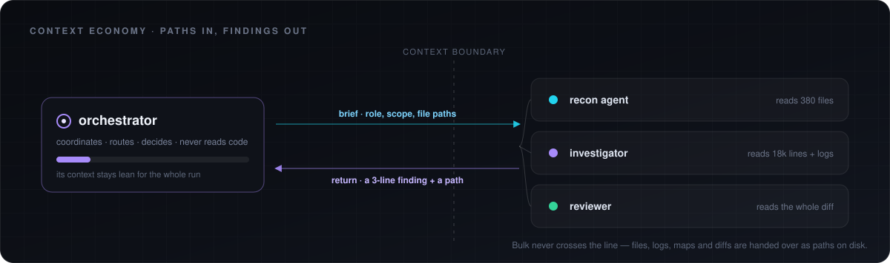
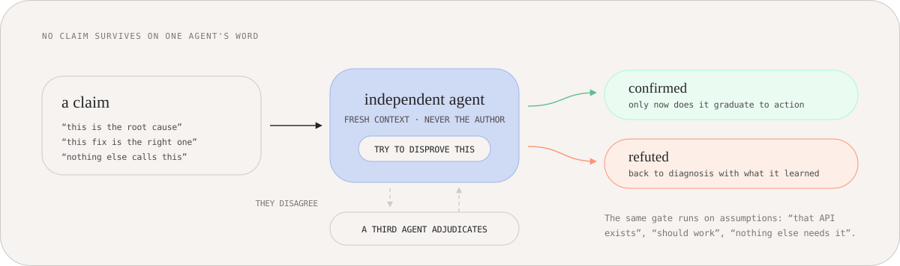
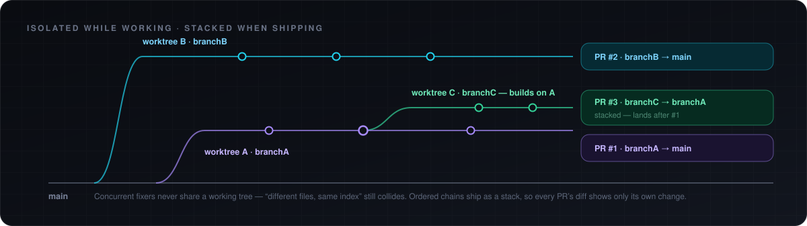

The orchestrator holds paths, not payloads
Reading a codebase into the coordinator burns the budget it needs to coordinate. Sub-agents do the reading and hand back a finding plus a path to the evidence.

A skill that runs a fleet of sub-agents across your codebase and does not stop until the work is proven.
Reading a codebase into the coordinator burns the budget it needs to coordinate. Sub-agents do the reading and hand back a finding plus a path to the evidence.

An agent that checks its own conclusion has checked nothing. Every root cause, fix and assumption goes to a second agent with fresh context, framed as something to disprove.

The run
It leaves when a verification pass is all green and a fresh sweep finds nothing, in the same round.
Phase 0
Prior learnings for this repo, then live state pulled through every connected tool: database schema and advisors, deploy config, logs, the threads where the problem was reported.
Phase 1
One agent per independent area writes a structured map. A synthesis agent ranks the problems and returns a dependency graph of the work: what can run in parallel, what has to wait.
Phase 2
An investigator returns the exact code path and failing condition. A separate agent gets that conclusion as a hypothesis to disprove. Disagreement sends it to a third.
Phase 2.5
The proposed change goes to two independent critics: is there a smaller fix, which sibling callers break, is this patching a symptom. The best version wins, not the first one.
Phase 3
Independent units run at the same time, each in its own git worktree and branch. Code is written lazy by discipline: the smallest change that actually holds, with a runnable check behind it.
Phase 4
Nothing is accepted on the author's word. A reviewer that did not write the code reads the diff for correctness, root cause versus symptom, dead code and broken siblings.
Phase 5
Fresh build, tests, types, lint, and the task's own check, judged on real output. Then a new sweep with new agents hunts what the fixes exposed. Anything it finds reopens diagnosis.
Phase 6
Diff against latest main for merge and semantic conflicts, compare against every open PR for collisions, run the safety scan, open the pull request with the real evidence attached.
Concurrent fixers never share a working tree. Ordered chains open as a stack, so every pull request shows only its own change.

Durable state at the repo root, so a restart resumes instead of redoing finished work.
Install
# clone once, symlink to both hosts
git clone https://github.com/SaarthurR/swarm-skill.git ~/skills/swarm
ln -s ~/skills/swarm ~/.cursor/skills/swarm
ln -s ~/skills/swarm ~/.claude/skills/swarmThen hand over the goal: